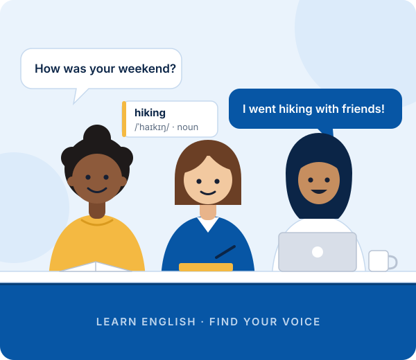

From ₹999/ month
IELTS Preparation
Structured preparation for IELTS Academic and General Training, with personal feedback on every skill.
- In person
- Online (video call)
English for your next chapter
Prepare for IELTS, TOEFL and other English exams while building the communication skills to succeed in study, work and everyday life.

Our courses
Five focused courses, each with a clear study plan and personal feedback. Learn in person or online over a video call, from ₹999 per month.
From ₹999/ month
Structured preparation for IELTS Academic and General Training, with personal feedback on every skill.
From ₹999/ month
Academic English, note-taking and timed practice for every section of the TOEFL iBT.
From ₹999/ month
Speak naturally and confidently in everyday conversation, with clearer pronunciation and less hesitation.
From ₹999/ month
English for interviews, meetings, presentations and emails, built around your own job and goals.
From ₹999/ month
Build confidence, presence and a clear speaking voice, from overcoming stage fear to persuasive delivery.
Our approach
Language is learned by people, with people, for real reasons. We teach English as something you use, not just something you study, so every lesson connects to a situation you'll actually face.
Read about our approachUse English in real-life situations, from ordering a coffee to leading a meeting, so new language sticks.
Recognise your strengths and the areas to work on, and focus your time where it makes the biggest difference.
Understand exactly how your exam works, then practise the skills and timing each section demands.
Express your ideas clearly and naturally, and stay calm when a conversation goes somewhere unexpected.
Skills development
Strong English isn't one skill. It's six working together. Here's what we practise, and why each one matters.
Speak in connected sentences, keep going when you make a mistake, and sound like yourself in English.
Five ways to speak betterFollow natural-speed speech, recognise how sounds link together, and be understood the first time.
Try a listening routineLearn grammar through use and vocabulary in useful chunks, so accuracy supports fluency instead of blocking it.
Everyday vocabularySkim for the main idea, scan for detail, and understand opinion and argument in longer texts.
How we teach readingPlan, structure and develop your ideas in clear paragraphs, from emails to exam essays.
Structure an essayIntroduce yourself, present an idea and answer questions with calm, clear delivery.
Professional introductionsFree learning resources
Short, practical guides you can read in a few minutes and use straight away.
Speaking
Simple daily habits that build fluency, from shadowing to speaking notes, without needing a partner every day.
Exam Prep
Memorised answers, one-word replies and over-correcting: what holds candidates back and what to do instead.
Vocabulary
Useful phrases for greetings, small talk, asking for help and keeping a conversation going naturally.
Writing
A clear four-paragraph plan, with an annotated example, that helps you answer the question fully and on time.
Listening
How to choose audio at the right level and use a three-step routine that trains your ear, not just your patience.
Professional
Introduce yourself with confidence, answer common interview questions and close the conversation professionally.
Self-check
Which description sounds most like you today? Choose a level to see where to begin.
You understand and use everyday expressions and basic phrases. Longer conversations, fast speech and unfamiliar topics still feel difficult, and you often translate in your head before you speak.
Start with: Everyday conversation vocabulary and Speaking & Fluency
You can talk about familiar topics and follow the main ideas of clear speech. You still pause to find words, make errors with more complex grammar, and find natural-speed conversations or abstract topics challenging.
Start with: Listening practice routine and Exam Preparation
You communicate comfortably on most topics. Your goals now are precision, natural expression and performing at your best under pressure, whether in an exam room, an interview or a meeting.
Start with: IELTS Writing Task 2 structure and Professional English
This is an informal self-check to help you choose where to begin. It is not a proficiency test, and it does not give you an official level.
Case studies
Example journeys for three common goals, showing the plan week by week. They are illustrations, not stories of real students.
The university applicant
Strong reader who freezes in Speaking and runs out of time in Writing Task 2. A ten-week plan focused on timing, structure and spoken confidence.
The quiet understander
Understands far more than they say. An eight-week plan that turns passive knowledge into everyday speaking through short, regular practice.
The career changer
Experienced in their field but unsure how to present it in English. A six-week plan for introductions, interview answers and follow-up emails.
About us
Humans of English exists to help learners communicate clearly, prepare for the opportunities that matter to them, and develop real confidence through practical English education.
Behind every exam score is a person with a plan: a university place, a new job, a move abroad, or simply the wish to be understood. We keep that person at the centre of everything we teach, combining structured exam preparation with the everyday communication skills that make English feel like your own.

Founded by Mansi Singh, a Cambridge CELTA-certified English educator and communication skills trainer.
FAQ
Quick answers to the questions learners ask most. Can't find yours? Get in touch.
Both tests measure your English for study, work or migration, but they feel different on the day. IELTS has Academic and General Training versions, and its Speaking test is a live conversation with an examiner. TOEFL iBT focuses on academic English and is taken on a computer, with your spoken answers recorded.
The most important question is which test your university, employer or visa route accepts. Check that first, then choose the format that suits you.
Yes. Speaking practice is useful from the very first lesson. Beginners start with everyday phrases, clear pronunciation of common sounds and short, supported conversations, and build from there. You don't need to "know enough grammar" before you start speaking.
Speak a little every day rather than a lot once a week. Learn phrases as whole chunks, copy short clips of natural speech (shadowing), and record yourself so you can hear your own progress. Regular feedback from a teacher helps you fix the habits you can't notice yourself.
Practise all three parts: short answers on familiar topics (Part 1), a long turn of up to two minutes on a topic card (Part 2), and a deeper discussion of ideas (Part 3). Focus on what examiners assess: fluency and coherence, vocabulary, grammatical range and accuracy, and pronunciation.
Absolutely. Free articles, podcasts, videos and practice tests can take you a long way. What free resources rarely give you is a plan that fits your level, and feedback on your speaking and writing. Use them alongside a clear routine and, when you can, some guided practice.
Start with your goal and your deadline. If you need a test score, find out which test and which score you need. If you want to communicate more confidently, think about where: everyday life, study or work. Then compare our five courses, use the level self-check to choose a starting point, or tell us about your goal.
All our courses start from ₹999 per month. Your exact fee depends on the course and the plan you choose, and we confirm it with you before you start. See all courses.
Both. Every course is available in person or live online over a video call, with the same study plan, materials and personal feedback. Choose your preferred format when you get in touch.
Get started
Tell us what you want to achieve in English, and start planning your learning journey.
Prefer to write directly?